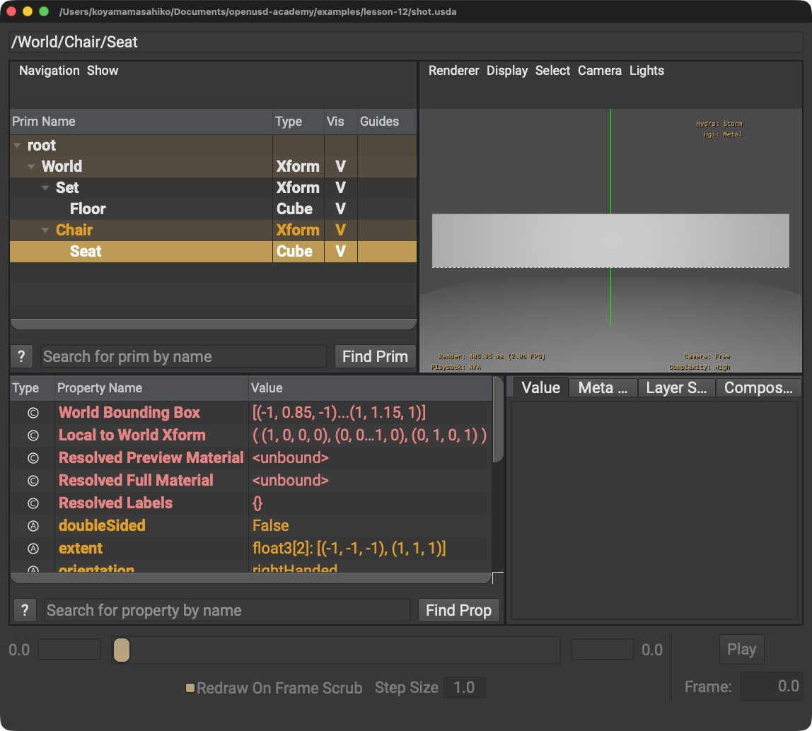

問題1 色を赤・青・黒から選ぶ
答え: Variant Sets。名前付きの有限個の選択肢だからです。
LESSON 12 · COMPOSITION
複数のOpinionが一つの結果になる順序を、上書き例から理解します
今日これだけ
Local → Inherits → Variant Sets → rElocates → References → Payloads → Specializes の順に強い。SublayerのOpinionは、そのLayer StackのLocalに含まれます。
公式情報に基づく説明
OpenUSDは、複数のLayer Stackとそこに記録されたOpinionを合成してStageを作ります。同じPrimの同じPropertyに異なる値が届いたとき、最終Stageに採用するOpinionを一意に決める規則が必要です。その基本順序がLIVERPSです。
強いとは、競合したときに最終値として採用されやすいという意味です。ファイルの更新日時、数値の大きさ、コードの行番号とは関係ありません。
Diagram
重要な区別
root layerと、そこから再帰的に集められたsublayerは、一つの順序付きLayer Stackを作ります。そのLayer Stack内に直接書かれたOpinionは、どのsublayerにあるものもLIVERPSではLocalです。
ただしLocal同士にも強弱があります。root layerが最も強く、続いてsubLayers配列の上に書かれたLayerから順に強くなります。つまり「SublayerだからReferenceより弱い」ではありません。SublayerのOpinionはLocalなので、Reference由来のOpinionより強くなります。
章内レッスン
SublayerはLIVERPSの一文字ではないため、最初に独立して学びます。その後、LIVERPSを強い順に一ページずつ進みます。Default PrimはComposition Arcではないため、先にLesson 09Aで学びます。
USDA
まず再利用元のstrength-base.usdaは、球の半径を1とします。
#usda 1.0
def Sphere "Ball"
{
double radius = 1
}doubleは小数を扱える数値型、radiusはSphereの半径Attribute、等号=はその値を記録する記号です。
次にショット側で/BallをReferenceし、同じ場所へ半径3を直接書きます。
#usda 1.0
def Sphere "Ball" (
prepend references = @./strength-base.usda@</Ball>
)
{
double radius = 3
}@./strength-base.usda@は参照するAsset Path、</Ball>はそのファイル内のPrim Pathです。丸括弧はPrim Metadata、波括弧はPrimの内容を囲みます。引用符はPrim名を囲み、インデントは所属を読みやすくします。
解決の追跡
R · Reference
strength-base.usda: radius = 1Referenceを通して弱いOpinionが届きます。
L · Local
strength-shot.usda: radius = 3同じLayer Stackに直接書いたLocal Opinionが競合します。
Composed result
radius = 3LはRより強いため、Stageで読む最終値は3です。値1は元ファイルから削除されたのではなく、より強いOpinionに隠れています。
Python
from pxr import Usd
stage = Usd.Stage.Open("strength-shot.usda")
radius = stage.GetPrimAtPath("/Ball").GetAttribute("radius")
print(radius.Get())
for spec in radius.GetPropertyStack():
print(spec.layer.identifier, spec.default)Get()は合成後の値3.0を返します。GetPropertyStack()は、そのPropertyへ寄与するProperty Specを強い順で調べる手がかりです。forは各Specを一つずつ取り出し、字下げされたprint()を繰り返します。
USDA → Python mapping
USDA
prepend references = @./strength-base.usda@</Ball>↓Python
ball.GetReferences().AddReference("./strength-base.usda", "/Ball")USDA
double radius = 3↓Python
ball.GetAttribute("radius").Set(3)合成後の確認
radius.Get() # 3.0使い分け
| Arc | 向いている場面 | 具体例 | 避けたい使い方 |
|---|---|---|---|
| V · Variant Sets | 一つのPrimに、名前付きで切り替える有限個の選択肢がある | 椅子のred/blue、車のsport/standard、LOD | ショットごとの自由な微調整を、無数のVariantとして増やす |
| R · References | 完成したPrim階層を別の場所で再利用する | chair.usdaを部屋へ10脚配置し、各参照先で位置やVariantを変える | ファイル全体の部署別レイヤリングだけを目的に使う |
| S · Specializes | 派生Prim側が上書きできる、最も弱いfallbackを与える | 「すべてのタイヤの既定摩擦」を用意し、各タイヤやLocalで例外を上書きする | 通常のアセット配置をSpecializesだけで組み立てる |
| Sublayer | 同じnamespaceを保ったまま、部署・工程・編集権限ごとのLayerを積む | model、look、animation、shot-fixのLayerを一つのLayer Stackにする | 独立アセットを何個も配置する用途に使う |
例題
答え: Variant Sets。名前付きの有限個の選択肢だからです。
答え: References。別ファイルのPrim階層を再利用するからです。重い内容をロード制御したい場合はPayloadも候補です。
答え: Sublayers。同じnamespaceを保つ作業LayerをLayer Stackとして順序付けたいからです。
答え: Specializes。最も弱いfallbackとしてOpinionを届けたいからです。
結果

Set → FloorとReference由来のChair → Seatが、一つのStage Treeへ合成されています。よくある間違い
原因: LIVERPSとファイルの読み込み順を混同しています。
解決策: RはReference Arcから届くOpinionの位置だと覚えます。
原因: 頭文字だけで対応させています。
解決策: SはSpecializes。SublayerはLayer Stack内のLocalです。
原因: 合成結果だけを見て、Property Stackを確認していません。
解決策: usdviewのLayer Stack／Prim StackやPythonのGetPropertyStack()で寄与元を調べます。
原因: Layer内の順序、List Editing、Path、再帰的なComposition Contextを省略しています。
解決策: LIVERPSは基本の強度順序です。実際の競合では、同じArc種別の内部順序も追跡します。
Glossary
Official references
確認日: